Reviva os Clássicos!
Relembre os consoles e jogos que marcaram época.
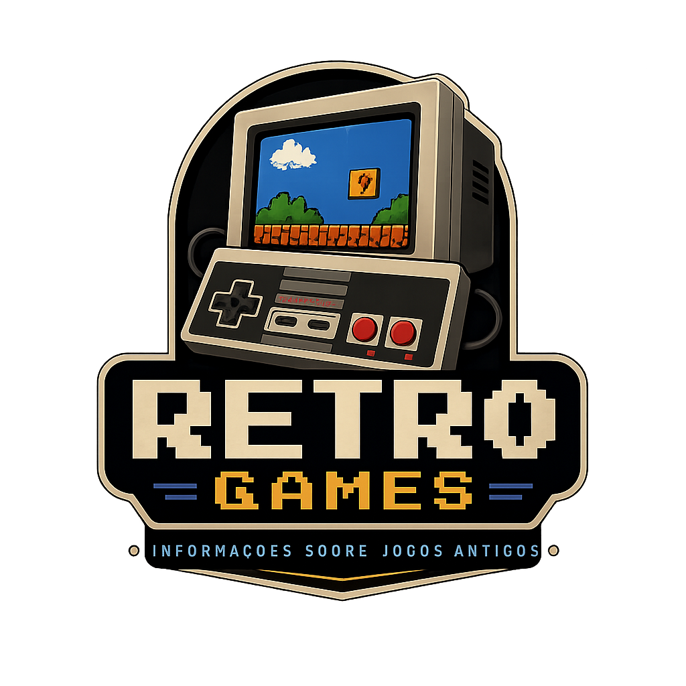
Relembre os consoles e jogos que marcaram época.
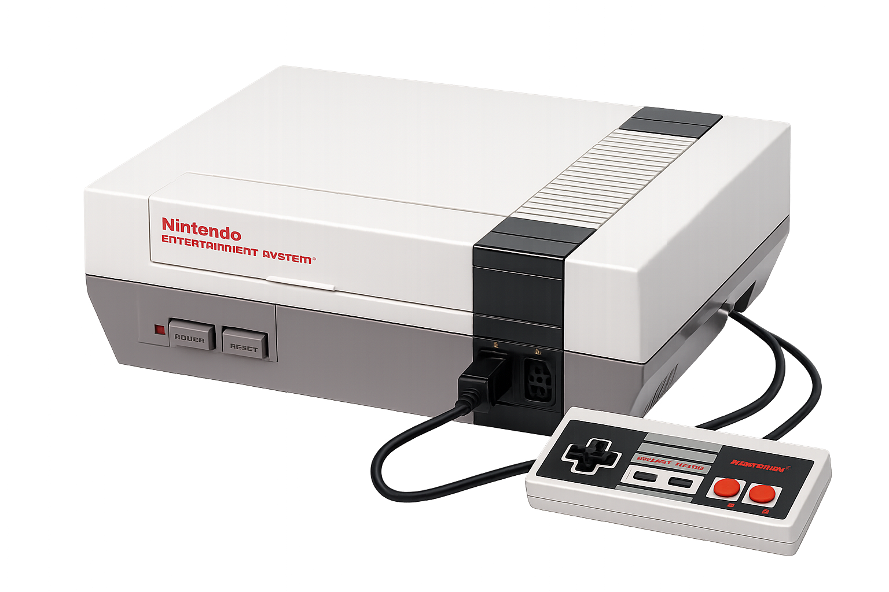
Cada geração de consoles trouxe inovações que transformaram a forma de jogar e explorar novos mundos virtuais.

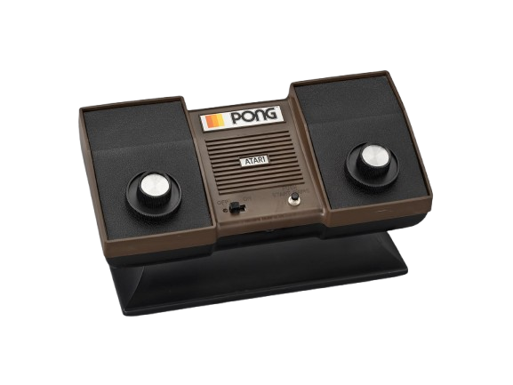
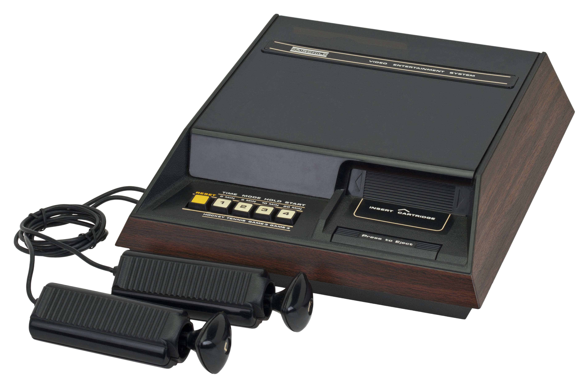
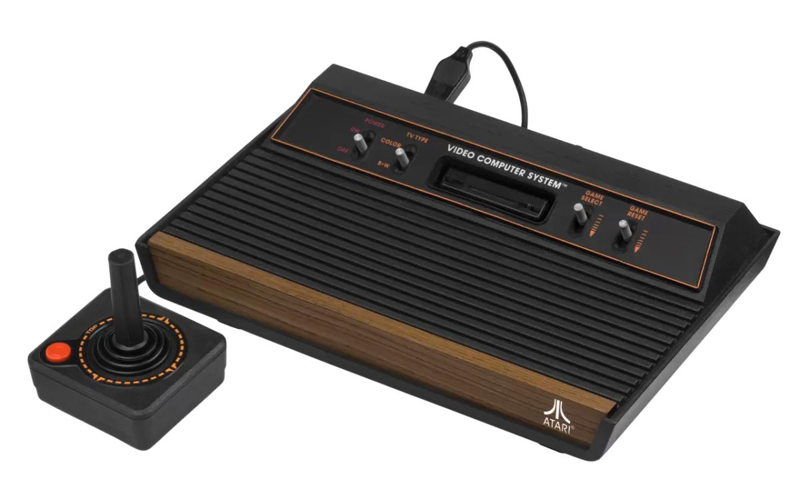
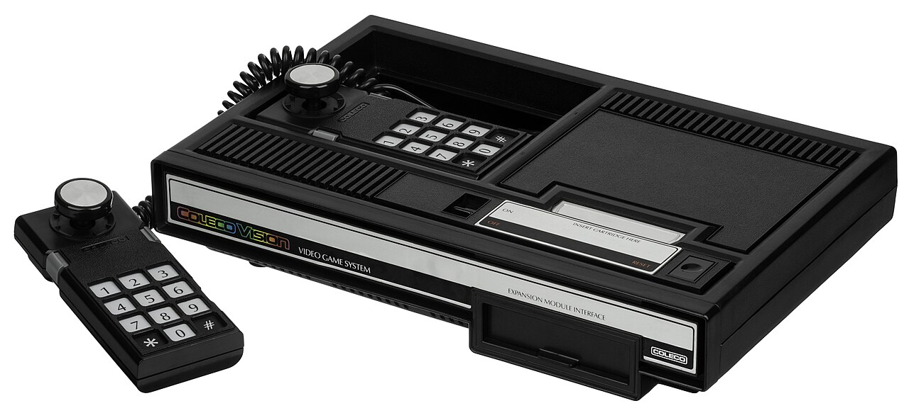

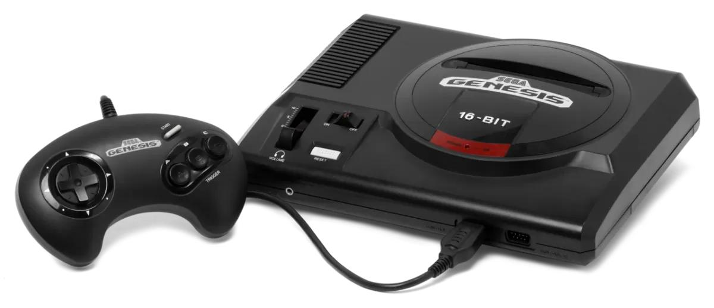
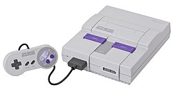

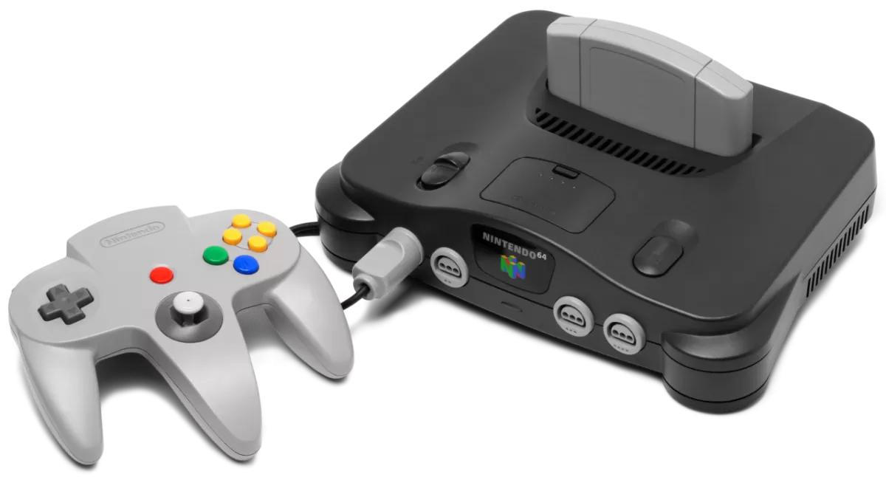
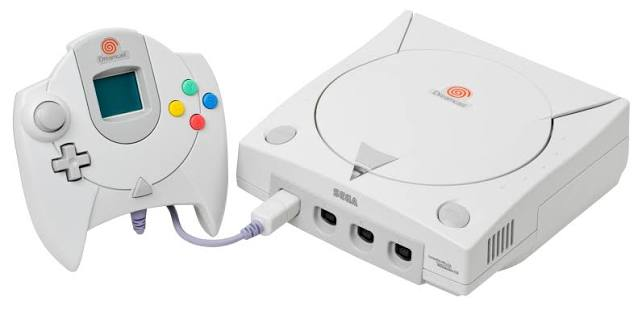

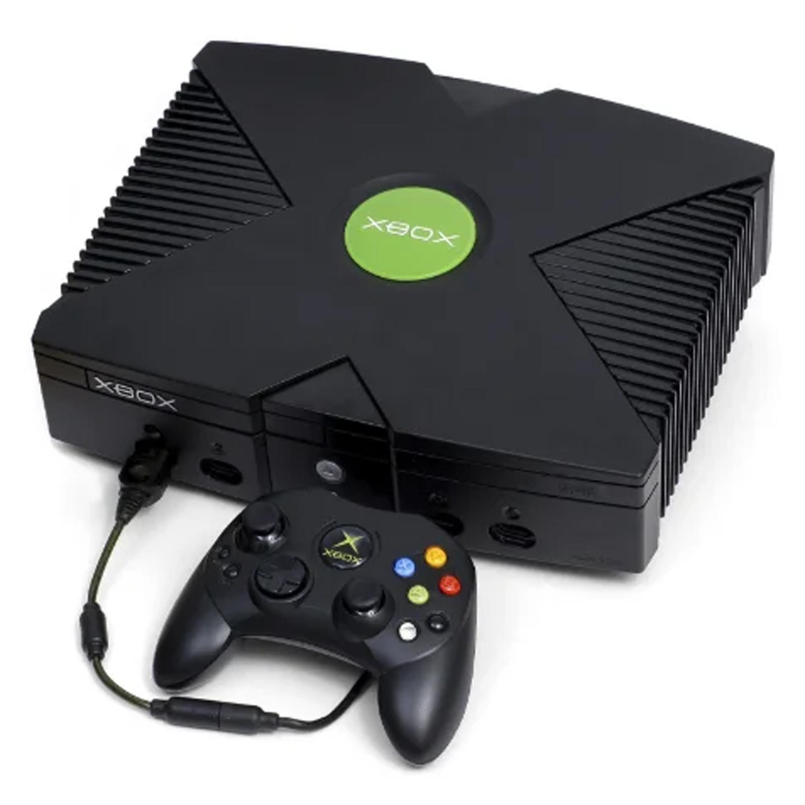
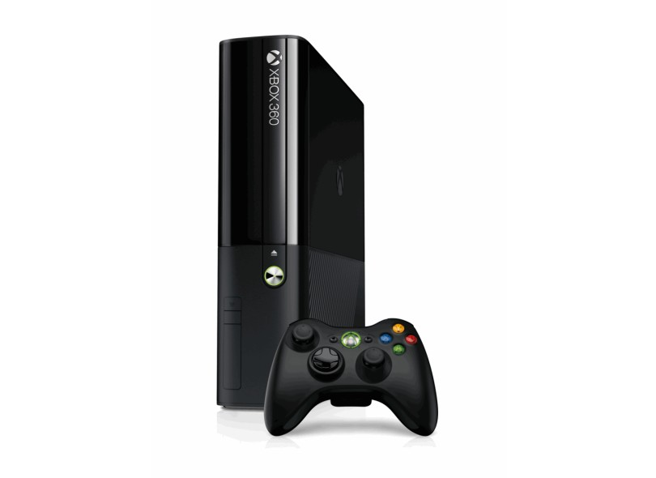
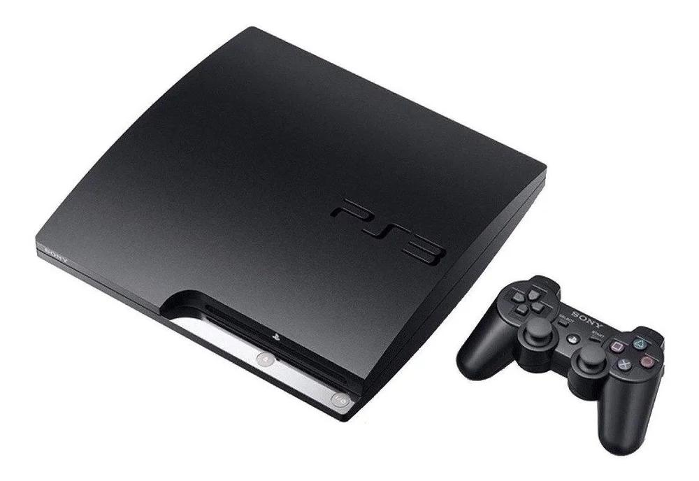


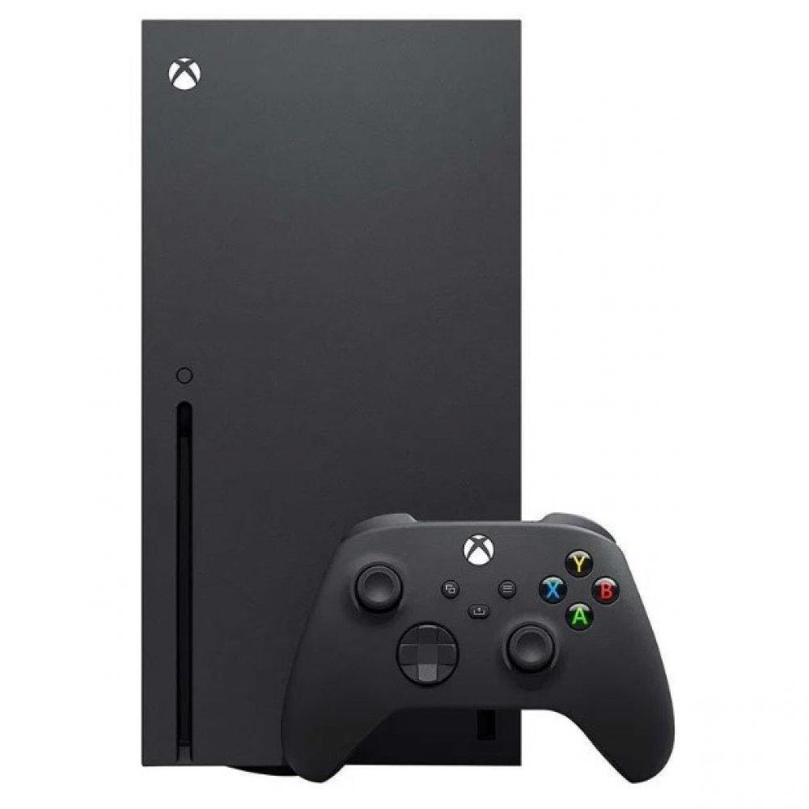
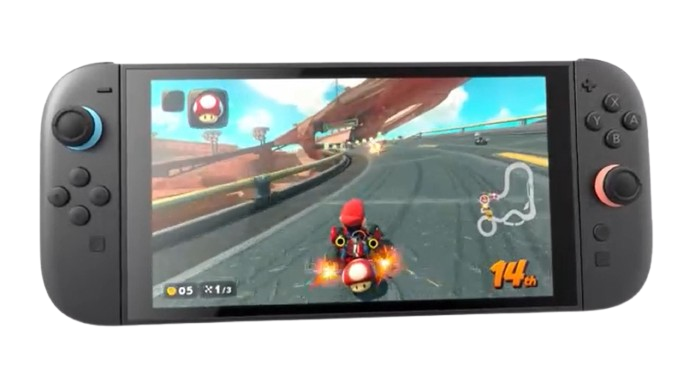
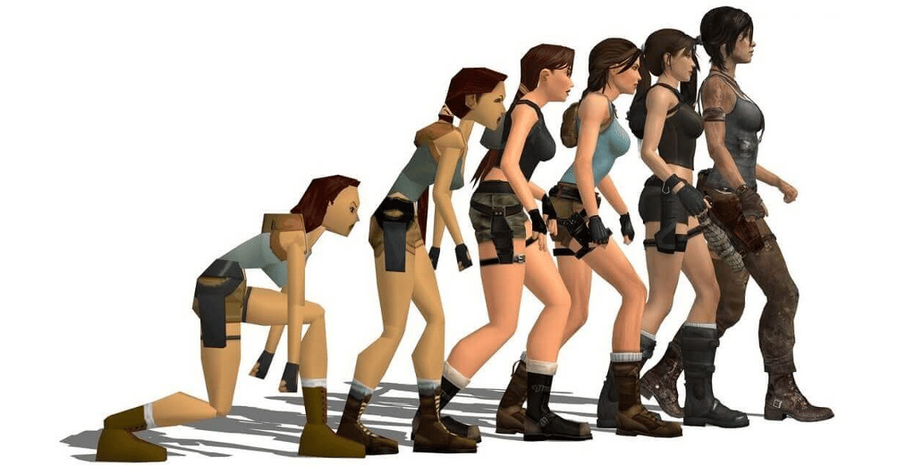
Os gráficos dos videogames passaram por uma grande evolução desde os primeiros jogos eletrônicos. No início, os jogos apresentavam imagens simples, com poucos pixels, poucas cores e formas básicas, mas já eram capazes de criar experiências interativas que conquistaram muitos jogadores. Com o avanço dos consoles e dos computadores, os gráficos ganharam mais detalhes, novas cores, personagens mais elaborados e ambientes em três dimensões, tornando os jogos mais realistas e imersivos. Atualmente, os videogames utilizam tecnologias avançadas, como resolução em alta definição, efeitos de iluminação realistas e gráficos cada vez mais próximos da realidade, mostrando como a tecnologia transformou a maneira de criar e experimentar os mundos virtuais.
Saiba maisA evolução dos gráficos teve um grande impacto na experiência dos jogadores ao longo dos anos. Com o aumento da qualidade visual, os jogos passaram a oferecer ambientes mais detalhados, personagens mais realistas e efeitos visuais que aumentam a sensação de imersão. Além disso, gráficos avançados ajudam a transmitir emoções, enriquecer a narrativa e tornar a exploração dos cenários mais envolvente. Embora a jogabilidade continue sendo um fator essencial, os avanços gráficos contribuíram significativamente para tornar os videogames experiências cada vez mais atrativas e emocionantes para os jogadores.
Saiba maisOs primeiros jogos considerados com gráficos 3D surgiram na década de 1990. Títulos como Wolfenstein 3D, Doom, Quake revolucionaram a indústria ao criar ambientes mais imersivos e detalhados.
As placas de vídeo (GPUs) passaram de simples aceleradoras gráficas para processadores extremamente poderosos, capazes de renderizar milhões de polígonos em tempo real.
O Ray Tracing simula o comportamento real da luz, produzindo reflexos, sombras e iluminação muito mais realistas. Essa tecnologia se tornou viável em jogos modernos a partir de 2018.
Cada geração de consoles teve seu melhor jogo, vamos descobrir alguns mais importantes para a história dos games.

Revolucionou os jogos 3D. Influenciou inúmeras mecânicas de exploração, combate e narrativa que são usadas até hoje.
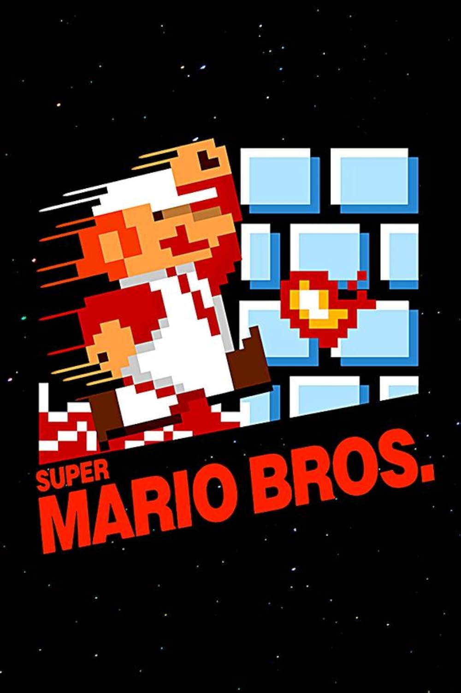
Um dos jogos mais influentes de todos os tempos. Definiu o gênero de plataforma e ajudou a popularizar os videogames em todo o mundo.
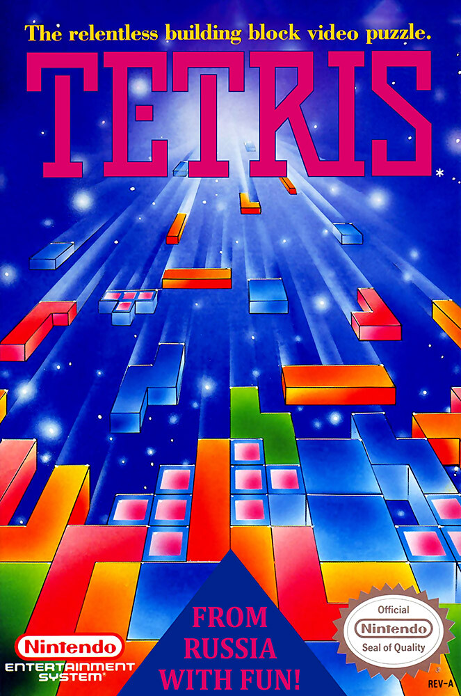
Clássico jogo de quebra-cabeça conhecido por sua simplicidade e jogabilidade viciante. Continua sendo um sucesso entre diferentes gerações.
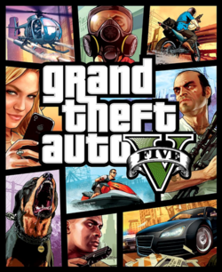
Possui um dos mundos abertos mais ricos já criados, oferecendo grande liberdade ao jogador e uma história marcante que conquistou milhões de fãs.